先看已验证的 Chrome 网页发布，再按需配置官方 API 授权
2026-10-12 · Chrome 网页发布实测
本次已成功：使用原本已登录的 Chrome，将 a (14).mp4 发布到 @andjacktom1，作品列表显示“所有人”。查看本次视频 ↗
| 项目功能 | 实际作用 |
|---|---|
| 保存账号、复制文案 | 账号长期保存在本机项目。最近选中的账号、未完成的文案和视频链接自动保存在当前浏览器，刷新或重新打开后恢复；各账号草稿独立保存。清除浏览器网站数据会清除这些草稿。不会登录或自动切换 TikTok 账号。 |
| 打开 TikTok 官方上传页 | 在 TikTok 选择文件、粘贴文案、核对可见范围并点击发布。 |
| 保存发布记录 | 发布后粘贴所属账号的完整视频链接，标记“用户确认已发布”；不自动验证公开状态。 |
| 普通视频发布和 API 重试 | 已停用 TikTok 发布，其他平台不受影响。TikTok 授权仍可用于读取视频。 |
在你平时使用、已经登录 TikTok 的 Chrome 中打开本人主页，核对用户名，并确认出现“编辑主页”按钮。本次用户名是 andjacktom1，显示昵称是“帅无罪”。仅打开某个用户的主页，不等于已登录该账号。
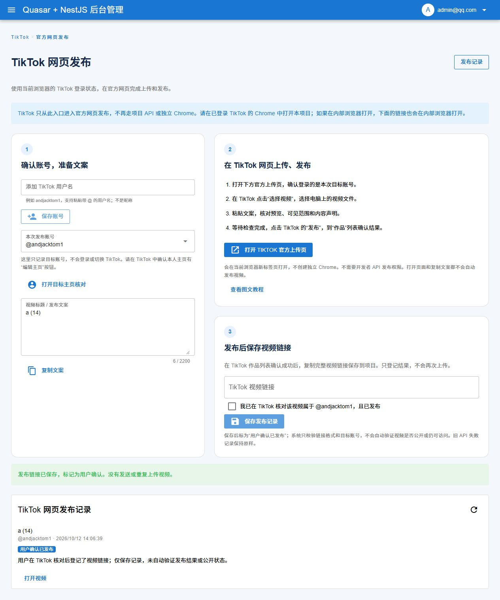
手动上传无需 ChatGPT 扩展。让助手代传时，需要连接你正在使用的 Chrome，并允许扩展访问本地文件网址。打开 chrome://extensions → ChatGPT 扩展 → 详细信息 → 开启“允许访问文件网址”。这是浏览器内部地址，请复制到地址栏打开。
本次扩展曾连接失败；用户更换代理地址后，实际恢复了标签页读取。恢复连接不代表上传成功，仍需完成下方操作。侧栏出现“此对话已在另一个应用中打开”也不能用来判断浏览器控制是否已连接。
点击“选择视频”，选择电脑上的文件。本次使用 E:\山立重工\a (14).mp4，720 × 1280，约 6 秒、1.16 MB。若有新功能介绍弹窗，点击“知道了”。等待页面显示“已上传”，不要把选中文件或上传百分比当成发布成功。
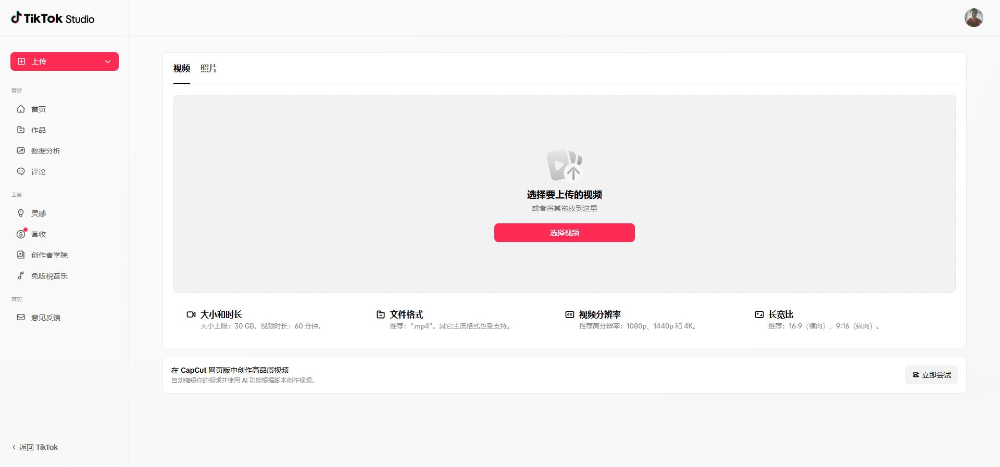
a (14)，正式发布时建议换成清楚的视频标题和介绍。“保存草稿”不会正式发布。如果提交后结果不明确，先查看作品列表，避免反复点击发布造成重复内容。
发布后进入 TikTok Studio 左侧“作品”。本次列表第一条显示 a (14)、10月12日 12:02、隐私为所有人，并生成了下方视频链接。这才是本次成功依据。
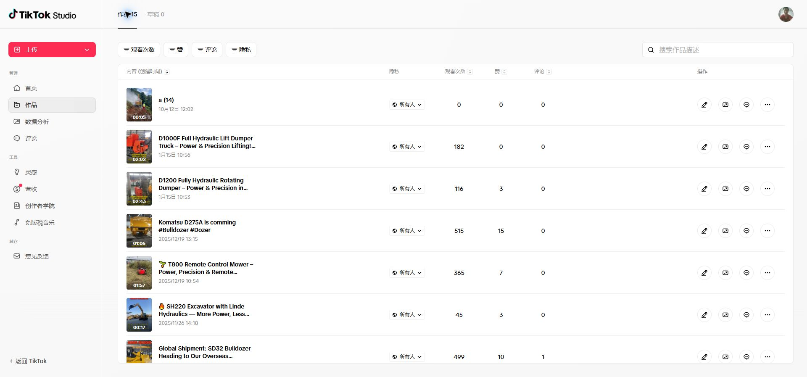
以下为官方 API 接入说明与历史测试记录；2026-10-12 的 Chrome 网页发布成功步骤见上文。本项目官方 API 发布入口按竖屏视频配置，使用 TikTok Content Posting API。本地授权使用 Desktop Login Kit：需要 Client Key、Client Secret 和 PKCE；PKCE 校验码由系统自动生成。
授权失败：fetch failed。
分别检查浏览器与本项目后端的网络连接。可使用已配置的项目级代理；不必为了本教程统一切换系统代理或 TUN 模式。浏览器能访问不代表后端能访问。
appIdappSecretvideo.publish，用于发布）。video.list 权限（公开视频读取能力）；仅发布则不需要。在应用的 Login Kit 中选择 Desktop 平台，并登记下面的本地回调地址。Web 平台要求 HTTPS，不能直接照填此 HTTP 地址。查看 Desktop 官方说明：
http://localhost:5001/platform/tiktok/oauth/callback应用和沙盒已创建；图标由管理员上传后，已点击 Apply changes 保存。Desktop、Login Kit、Content Posting API、Direct Post 和 video.list 已配置，本地 Desktop 回调已核对。测试账号 andjacktom1 已连接，项目 OAuth 已成功回调并保存令牌。未执行视频发布。
已在项目中制作本地应用首页、使用条款、隐私说明和 1024 × 1024 PNG 图标。未部署公网网站。以下本地地址已随图标一同保存至沙盒；这不等于正式应用审核通过，也不表示其他人的电脑能够访问这些页面。
frontend/public/tiktok-app/app-icon.png。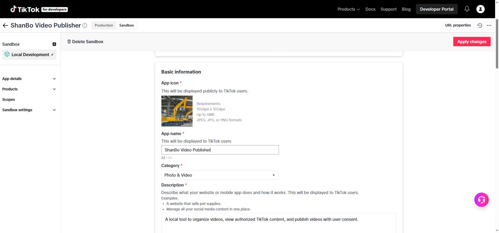
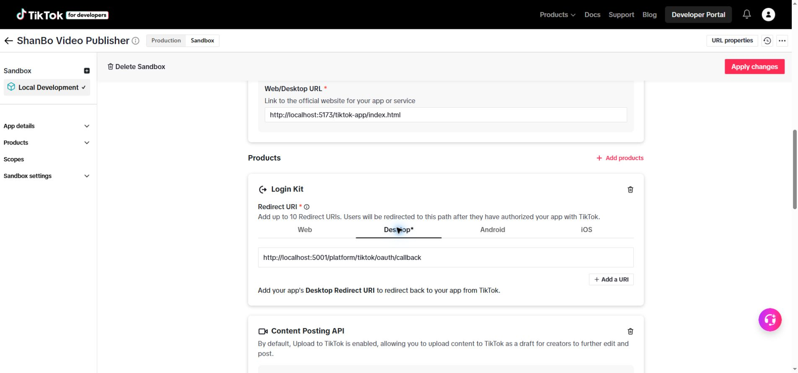
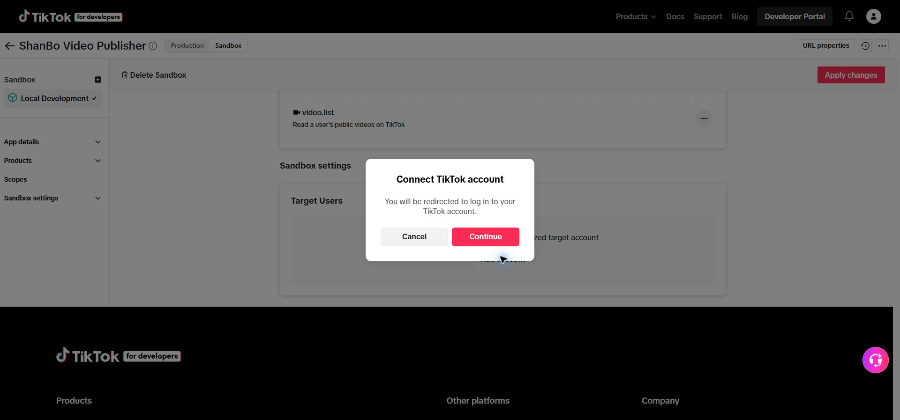
当前测试账号已出现在 Target users 中。本地填写沙盒 Client Key / Client Secret 后完成 OAuth，页面显示授权成功、令牌已保存。读取视频接口已补齐 fields 参数并修正首次请求的 cursor，复测已成功显示真实视频、封面、时长和统计信息。多账号相关 30 项测试、前后端构建及前端类型检查通过。授权配置已重新备份；尚未执行或验证真实视频发布。
使用与目标 TikTok 账号一致的登录会话完成连接。浏览器后台管理会话过期时，保存可能提示 Unauthorized；应重新登录本地后台，不要把该提示误认为 TikTok 密钥错误。
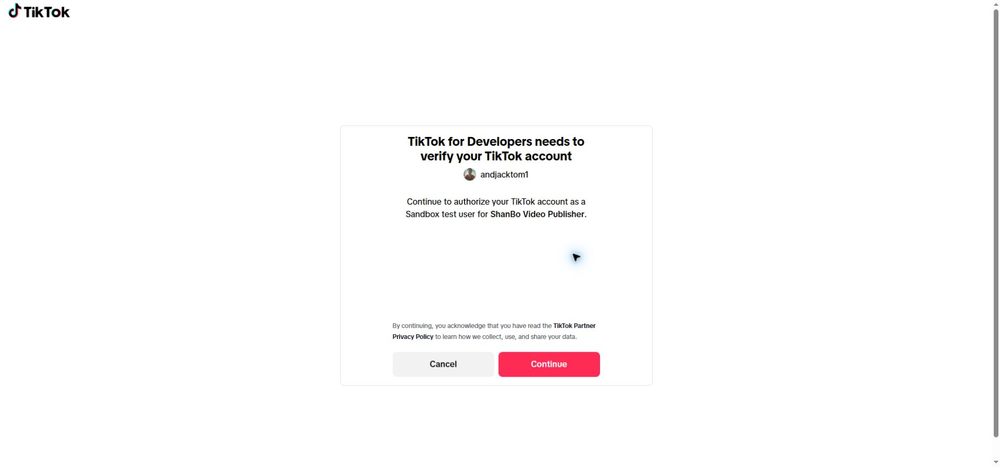
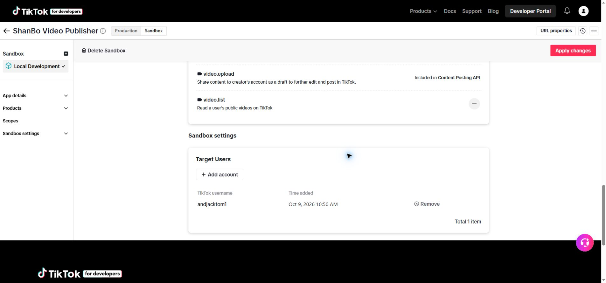
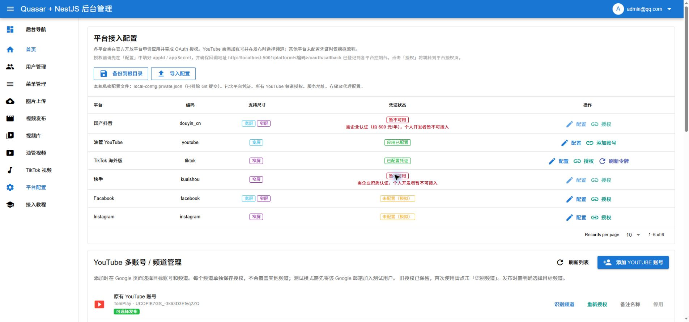
打开本地 TikTok 视频页，点击“获取视频”。该接口读取授权账号的公开视频。官方视频列表接口说明。
此前本地网址校验通过但图标未上传，表单提示 App icon is required。上传图标后此错误已解决。
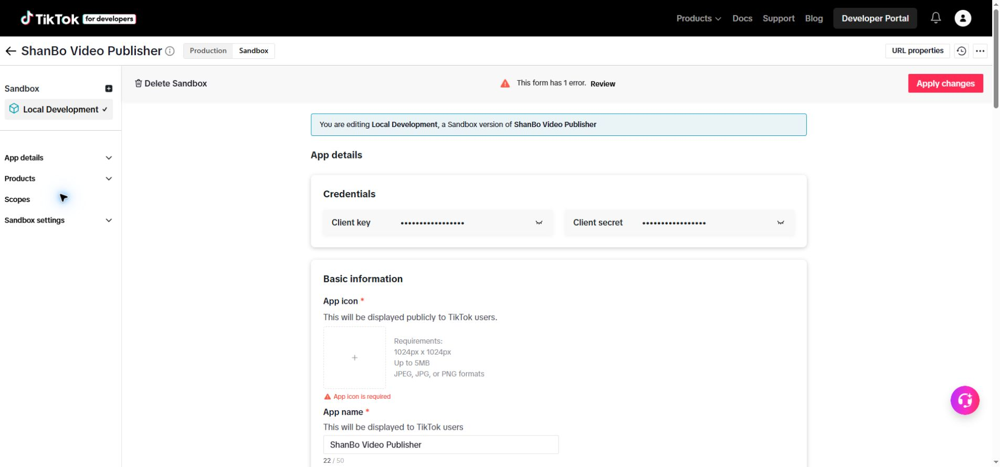
user.info.basic、video.publish、video.list 权限。code_challenge / code_verifier），你无需手动操作。local-config.private.json 包含所有 TikTok / YouTube 账号，导入按身份合并，保留已有账号 ID。文件及恢复备份均已排除 Git。历史授权实测（不包含上方 Chrome 网页发布）：原 TikTok 授权迁移成功，已识别昵称并读取真实视频；多账号隔离、错号拒绝、重试绑定、刷新轮换和备份合并已通过自动化测试。当前实际连接 1 个 TikTok 账号；第二个账号需由目标账号完成授权。尚未实际上传或发布视频，平台沙盒及发布审核限制仍适用。
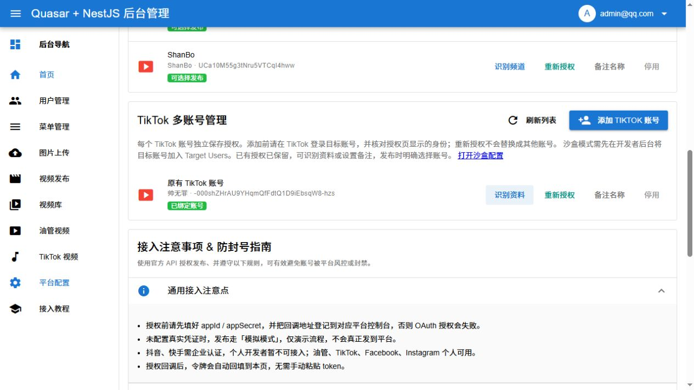
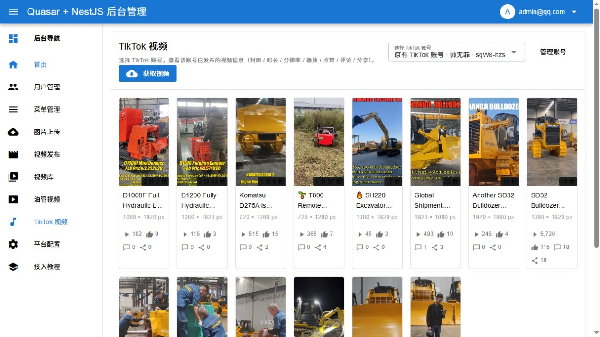
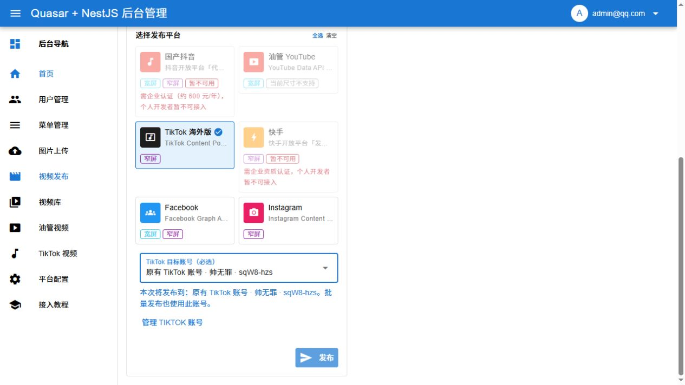
| 坑 | 现象 / 原因 | 解决办法 |
|---|---|---|
| fetch failed | 后端连不上 TikTok | 检查本项目后端的代理配置及连接；浏览器能访问不代表后端可访问 |
| 应用未审核，直发被拒绝 | unaudited_client_can_only_post_to_private_accounts | 2026-10-09 实测：重试 PV390H 视频仍在初始化阶段被拒绝，未上传到 TikTok；YouTube 已成功且未重复发布。同日 16:39 新建 a (14).mp4 发布任务（1.2 MB、720 × 1280、约 6 秒），只选择 TikTok 账号，仍收到同一审核限制错误。更换视频不能解除应用审核限制。根据 官方发布规则，未审核应用要求发布账号为私密账号、视频可见性为 SELF_ONLY（仅自己可见）。已增加发布前账号检查和可见性选择；旧任务需在重试弹窗中重新选择可见性。账号整体隐私变更须由用户决定，不能自动切换。公开自动直发需完成平台审核；也可使用 TikTok 官方界面手动发布。反复重试不会解除审核限制。 |
| 分片数量不正确 | The total chunk count is invalid | 已修正上传分片算法：不超过 64 MB 的视频整段上传，更大视频把尾部不足一片的字节并入最后一片，片数向下取整。上传时校验 HTTP 状态，全部接收后才显示已上传。参见 TikTok 官方分片规则。修复后可在 发布记录 重试失败的平台；已经成功的平台不重复发布。 |
| token 过期 | 发布时提示过期 | 系统按账号刷新并保存新令牌；失败时对该账号点击「重新授权」 |
| 产品没添加 | 授权时没有发布权限 | 先 Add product：Content Posting API |
| 上传地址失效 | 上传超时 | 上传地址 1 小时有效，及时上传 |
| 系统字段 | TikTok 的叫法 | 说明 |
|---|---|---|
appId | Client Key | 应用标识 |
appSecret | Client Secret | 应用密钥 |
accessToken | access_token | 访问令牌（24h 过期） |
| PKCE | code_challenge / code_verifier | 系统自动生成，无需手动处理 |
2026-10-09 已上线本地功能；界面和模拟接口测试通过，不代表应用已通过 TikTok 审核，也不代表新视频已成功发布。
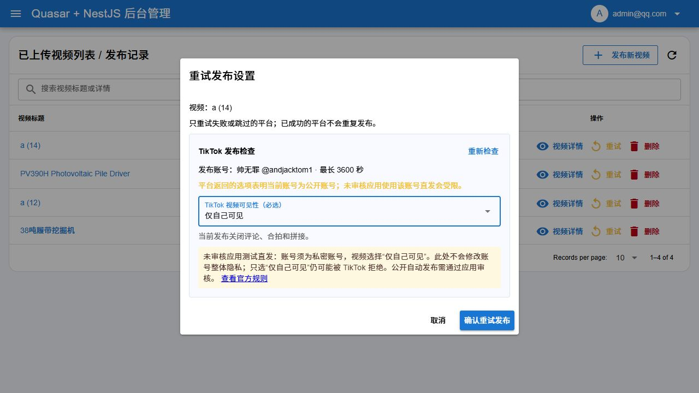
此前内部浏览器测试记录（早于本页上方的网页发布成功）：a (14).mp4（720 × 1280、约 6 秒）恢复本地上传成功，TikTok 账号检查正常返回，可见性未选时发布按钮禁用。本轮没有创建新发布任务或实际发送视频。当前账号仍为公开账号；先前遇到的应用审核限制不会因这些修复解除。
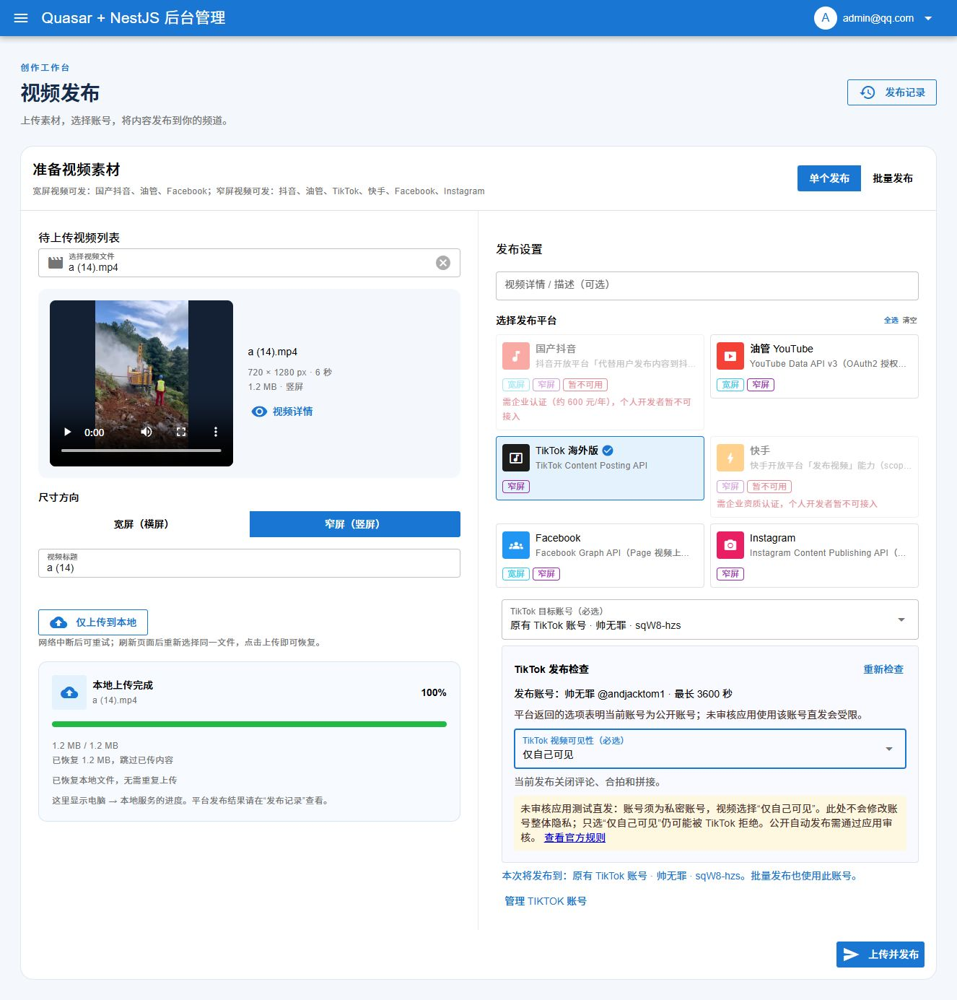
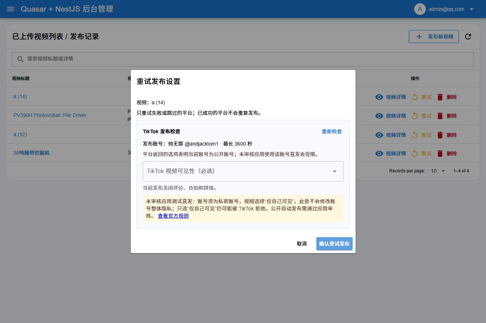